An√°lise de Agrupamento
Supervisionado e N√£o Supervisionado
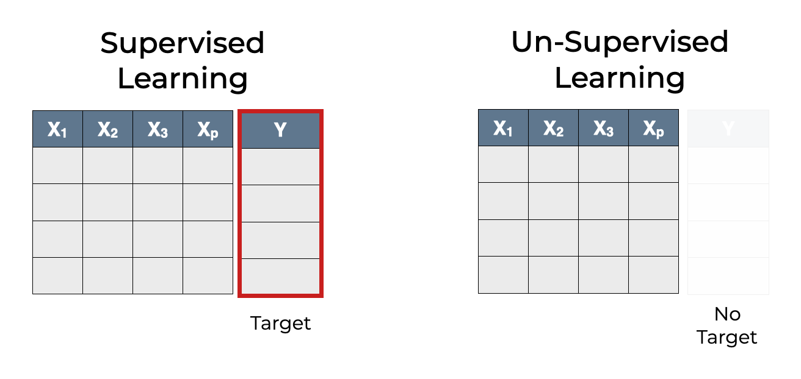Supervisionado e N√£o Supervisionado

Método de Agrupamento
O objetivo da análise de cluster é agrupar as observações em grupos de tal forma que dentro de cada grupo as observações são semelhantes e distintas entre os grupos.
Dentro de cada grupo a variabilidade deve ser mínima e a variabilidade entre os grupos deve ser máxima.
Similaridade e Dissimilaridade
Dois objetos são próximos quando a sua dissemelhança ou distância é pequena ou a semelhança é grande.
- Semelhança: Quando queremos agrupar dados qualitativos.
Similaridade e Dissimilaridade
Dois objetos são próximos quando a sua dissemelhança ou distância é pequena ou a semelhança é grande.
- Dissemelhança: Quando queremos agrupar dados quantitativos
Agrupar observações quantitativas
Vamos supor que queremos formar grupos de alunos:
| Aluno | Matematica | Portugues |
|---|---|---|
| A | 9 | 7 |
| B | 5 | 4 |
| C | 6 | 6 |
| D | 10 | 8 |
| E | 4 | 4 |
| F | 4 | 9 |
Quantos grupos?
Como vamos determinar os grupos?
Agrupar observações quantitativas
| Aluno | Matematica | Portugues |
|---|---|---|
| A | 9 | 7 |
| B | 5 | 4 |
| C | 6 | 6 |
| D | 10 | 8 |
| E | 4 | 4 |
| F | 4 | 9 |
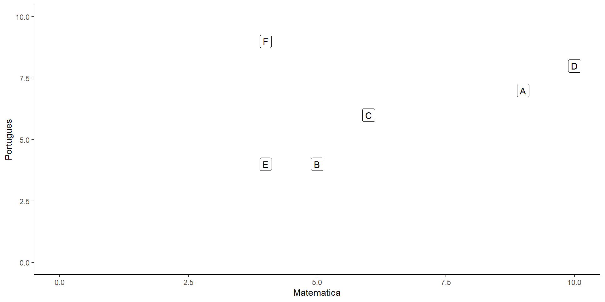
Agrupar observações quantitativas
| Aluno | Matematica | Portugues |
|---|---|---|
| A | 9 | 7 |
| B | 5 | 4 |
| C | 6 | 6 |
| D | 10 | 8 |
| E | 4 | 4 |
| F | 4 | 9 |
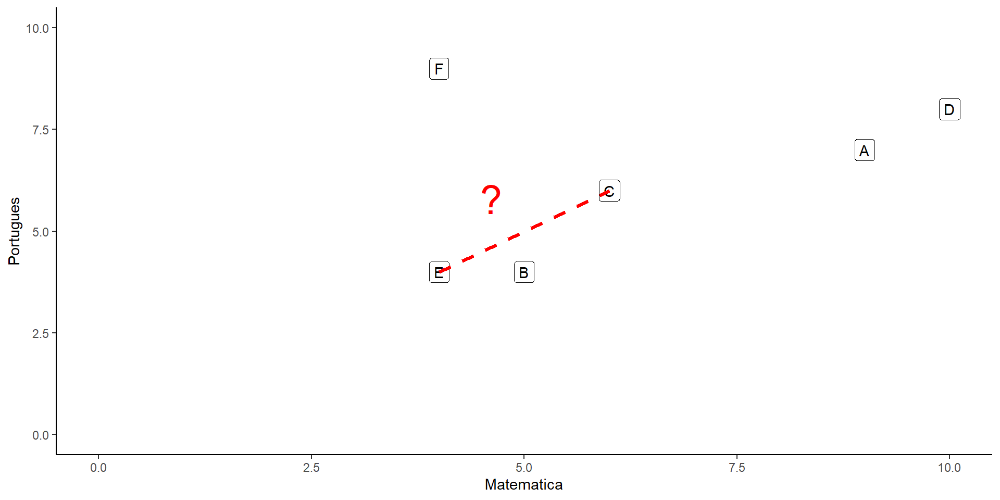
Como podemos medir a dissemelhença ou distância entre os alunos?
Medidas de dissemelhança
Os coeficientes de dissemelhança para dados quantitativos mais utilizados são:
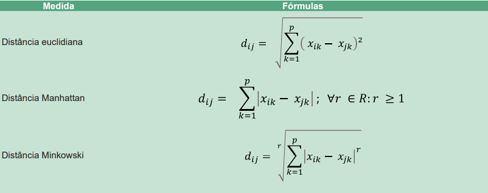Medidas de dissemelhança
Os coeficientes de dissemelhança para dados quantitativos mais utilizados são:
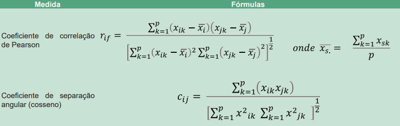Medidas de dist√¢ncia
Dist√¢ncia Euclidiana: \[\displaystyle D_E ={||x - w||=\sqrt{\sum_{i=1}^{k} (x_i - w_i)^2}}\]
A distância Euclidiana gera a distância linear entre quaisquer dois pontos em um campo com k dimensões.
É uma generalização do Teorema de Pitágoras
Medidas de dist√¢ncia
Dist√¢ncia Minkowsky: \[\displaystyle D_p (x_i, x_j) = \left({\sum_{k=1}^{d} |x_{ik} - x_{jk}|^p} \right)^{\frac{1}{p}}\]
Pode criar pesos para cada vari√°vel, quando necess√°rio.
É uma medida menos afetada pela presença de outliers (comparada a distância euclidiana).
Dist√¢ncia Euclidiana
Dist√¢ncia entre B e D
Agrupar alunos que sejam parecidos, com relação as notas em matemática e portugês.
| Aluno | Matematica | Portugues |
|---|---|---|
| A | 9 | 7 |
| B | 5 | 4 |
| C | 6 | 6 |
| D | 10 | 8 |
| E | 4 | 4 |
| F | 4 | 9 |

Dist√¢ncia entre B e D
Agrupar alunos que sejam parecidos, com relação as notas em matemática e portugês.
| Aluno | Matematica | Portugues |
|---|---|---|
| A | 9 | 7 |
| B | 5 | 4 |
| C | 6 | 6 |
| D | 10 | 8 |
| E | 4 | 4 |
| F | 4 | 9 |
\[\displaystyle D^2 ={(x_{14} - x_{12} )^2 + (x_{24} - x_{22})^2}\] \[\displaystyle D^2 ={(5 - 10 )^2 + (4 - 8)^2}\] \[\displaystyle D^2 ={5^2 + 4^2 = 41}\]
\[\displaystyle D ={\sqrt{41}} = 6,40\]
Matriz de Dist√¢ncia
A matriz \(D_0\) composta pelas distâncias euclidianas entre cada par de observações, conforme segue:
| A | B | C | D | E | |
|---|---|---|---|---|---|
| B | 5.0000 | 0.0000 | 2.2361 | 6.4031 | 1.0000 |
| C | 3.1623 | 2.2361 | 0.0000 | 4.4721 | 2.8284 |
| D | 1.4142 | 6.4031 | 4.4721 | 0.0000 | 7.2111 |
| E | 5.8310 | 1.0000 | 2.8284 | 7.2111 | 0.0000 |
| F | 5.3852 | 5.0990 | 3.6056 | 6.0828 | 5.0000 |
Inicialmente cada observação é considerada um cluster individual, ou seja, no estágio 0, temos 6 clusters.
Matriz de Dist√¢ncia
A matriz \(D_0\) composta pelas distâncias euclidianas entre cada par de observações, conforme segue:
| A | B | C | D | E | |
|---|---|---|---|---|---|
| B | 5.0000 | 0.0000 | 2.2361 | 6.4031 | 1.0000 |
| C | 3.1623 | 2.2361 | 0.0000 | 4.4721 | 2.8284 |
| D | 1.4142 | 6.4031 | 4.4721 | 0.0000 | 7.2111 |
| E | 5.8310 | 1.0000 | 2.8284 | 7.2111 | 0.0000 |
| F | 5.3852 | 5.0990 | 3.6056 | 6.0828 | 5.0000 |
Depois de calcular as dist√¢ncias quem pode formar grupo?
Métodos de agrupamento
Hier√°rquico
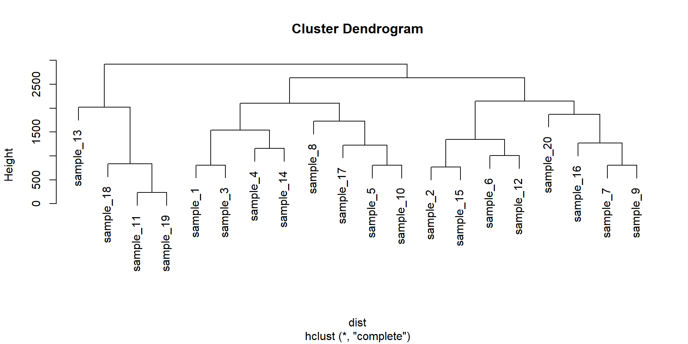
N√£o Hier√°rquico
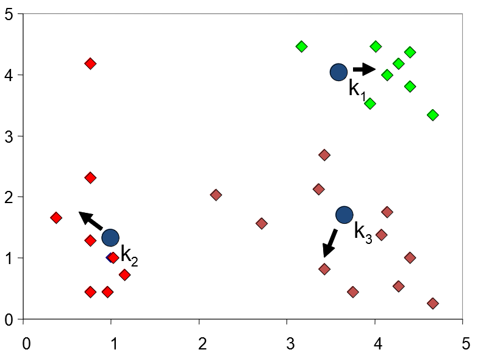
Métodos de agrupamento
Hier√°rquico
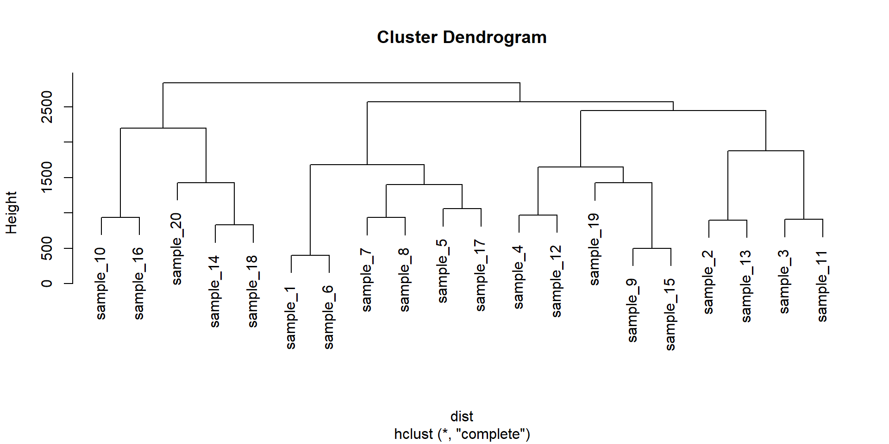
- positivo: conseguimos acompanhar a formação dos grupos.
- negativo: é menos eficiente em grande volume de dados.
Métodos de agrupamento
N√£o Hier√°rquico
- positivo: trabalha bem com grande volume de dados.
- negativo: a quantidade de cluster deve ser decidida antes.
Hier√°rquico
Primeiro est√°gio
A menor distância entre todas as observações e, portanto, serão inicialmente agrupadas formando um novo cluster.
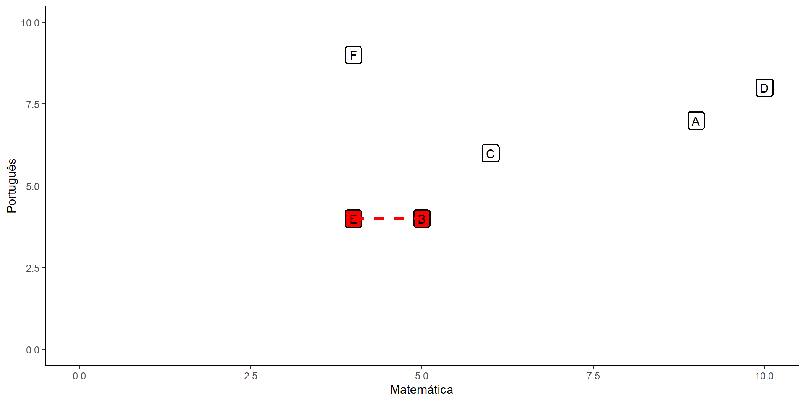Como vamos calcular a distância entre o cluster B-E e as demais observações?
Técnicas de Agrupamentos
A escolha do método de aglomeração é tão importante quanto a definição da medida de distância.
- Single Linkage - Vizinho mais próximo
- Complete Linkage - Vizinho mais longe
- Avarage Linkage - Média
- Centroid Méthod - Centroíde
Técnicas de Agrupamentos
A escolha do método de aglomeração é tão importante quanto a definição da medida de distância.
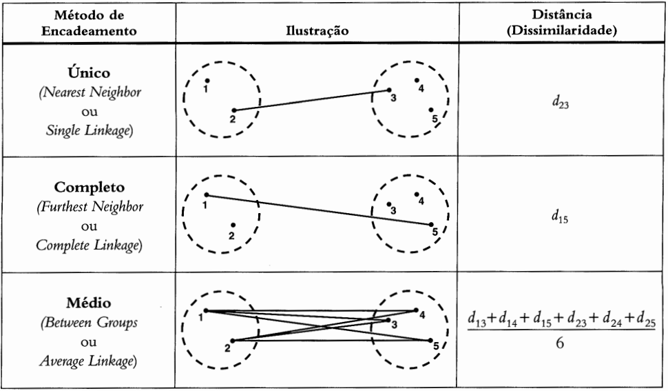Técnicas de Agrupamentos
Calculadas as dist√¢ncias entre o cluster (B-E) e os demais alunos.
| A | B | C | D | E | |
|---|---|---|---|---|---|
| B | 5.0000 | 0.0000 | 2.2361 | 6.4031 | 1.0000 |
| C | 3.1623 | 2.2361 | 0.0000 | 4.4721 | 2.8284 |
| D | 1.4142 | 6.4031 | 4.4721 | 0.0000 | 7.2111 |
| E | 5.8310 | 1.0000 | 2.8284 | 7.2111 | 0.0000 |
| F | 5.3852 | 5.0990 | 3.6056 | 6.0828 | 5.0000 |
A distância de (B-E) para C é 2.2360 e 2.8284:
- single: 2.2360
- complete: 2.8284
Técnicas de Agrupamentos

Segundo est√°gio
Portando, no segundo est√°gio, um segundo cluster ser√° formado (A-D)
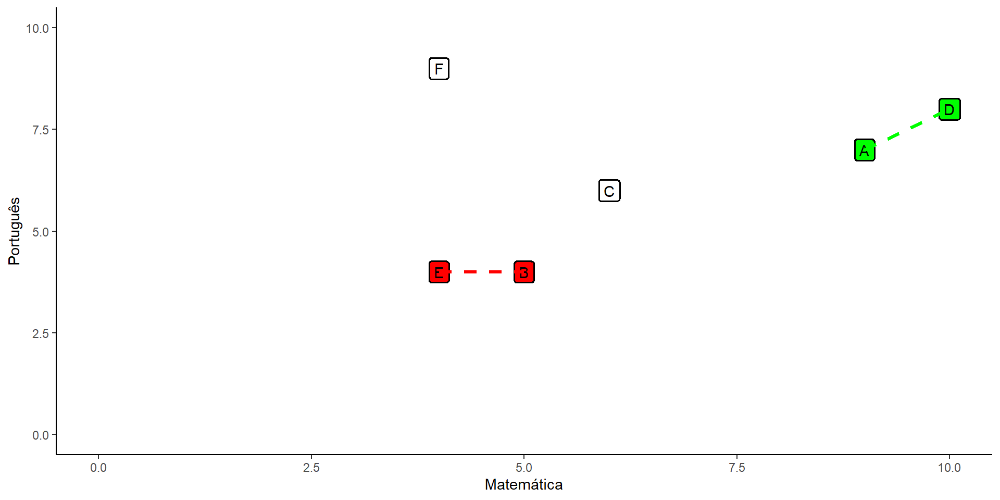Os alunos C e F permanecem ainda isolados
Terceiro est√°gio
Neste estágio C é inserido no cluster já formado (E-B)
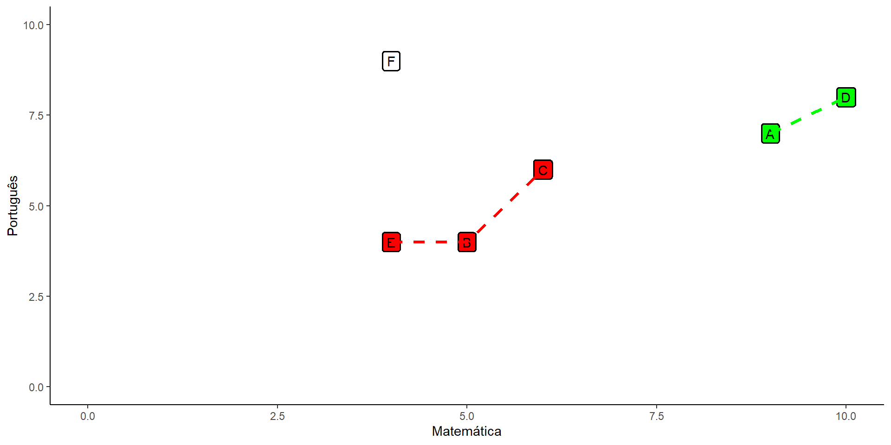O aluno F permanece ainda isolado
Dendrograma
Como base nesse esquema de aglomeração, podemos construir um gráfico em formato de árvore, conhecido como dendrograma
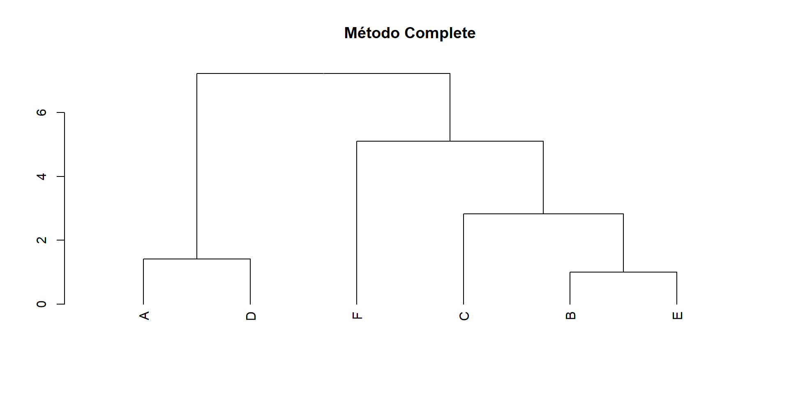Dendrograma
Single
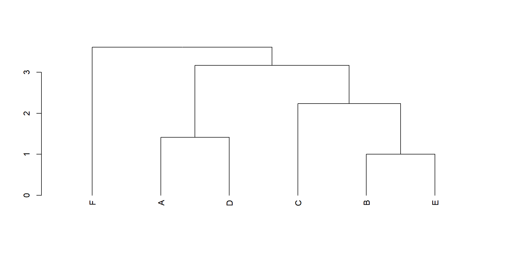
Complete
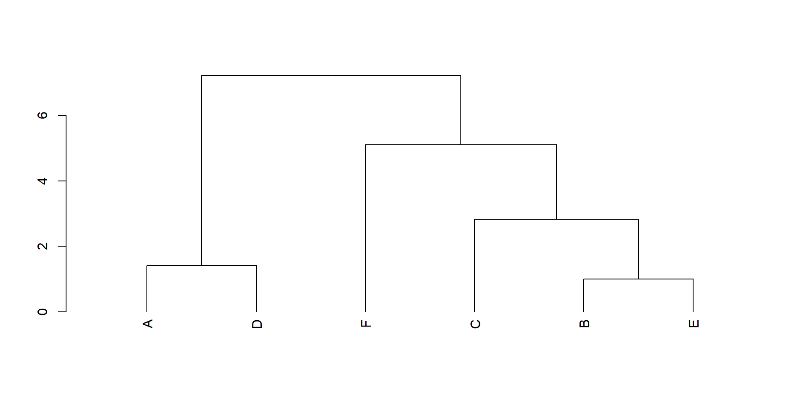
Dendrograma
Average
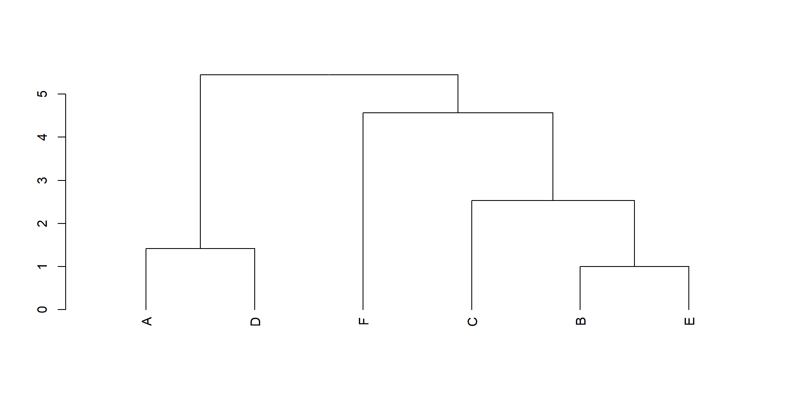
Centroid
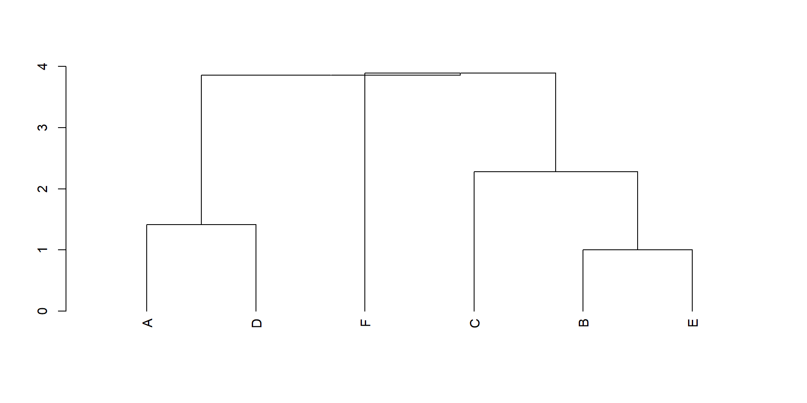
N√∫mero de Cluster
Como você decidiria o número de cluster?
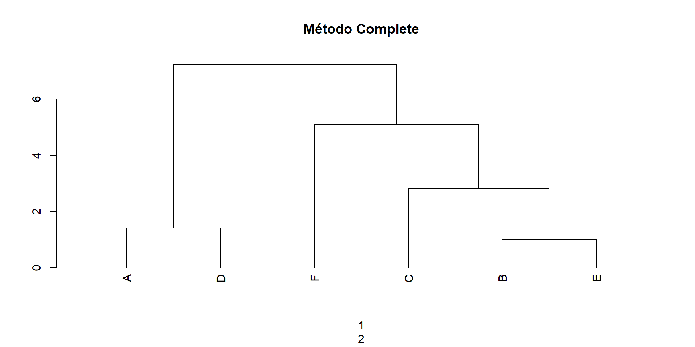N√∫mero de Cluster
Como você decidiria o número de cluster?
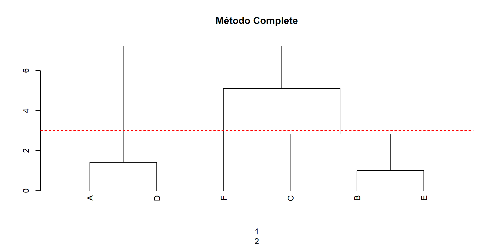N√∫mero de Cluster
3 grupos é uma boa solução?
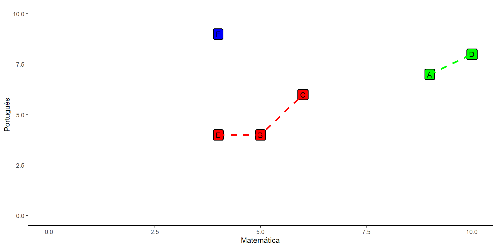Técnicas para escolher o número de cluster
Método Elbow
Assim como no princípio de cluster, a ideia do método é minimizar a variabilidade dentro do cluster, ou seja:
\[\small min(\sum_{i=1}^{n} W(C_k))\] onde \(C_k\) √© o ùëò cluster e \(ùëä(C_k)\) √© a varia√ß√£o dentro do cluster.
Então, o total da soma dos quadrados dentro do cluster \((wss)\) mede a homogeneidade do cluster e queremos que seja tão pequeno quanto possível.
Método Elbow
De acordo com o método, o número ideal de grupos se dá quando o ponto forma uma curva semelhante de um cotovelo, que é o ponto considerado ideal.
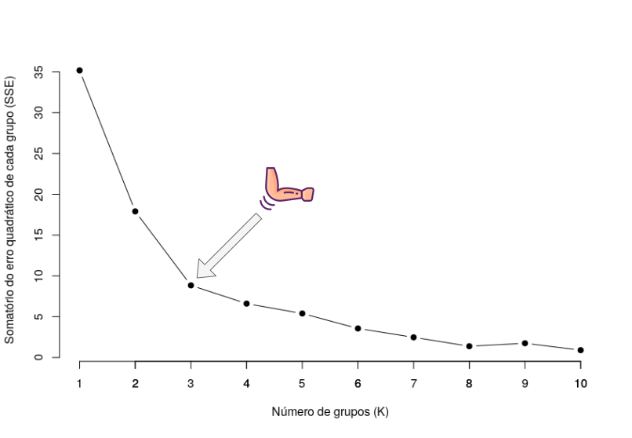Método Silhueta
Determina o qu√£o bem cada objeto est√° alocado em um grupo, ou seja, a homogeneidade de um grupo.
\[\small s_i = \frac {\bar x_i - \bar y_i}{max(\bar y_i, \bar x_i)}\]
\(\bar y_i\) é a distância média entre o ponto e todos os demais pontos do cluster. \(\bar x_i\) é a distância média entre o ponto e todos os pontos do cluster vizinho mais próximo.
Método Silhueta
O índice de Silhueta varia de -1 a 1. Valores próximos a 1 indicam que o objeto possui semelhança com objetos de seu grupo e dessemelhança com objetos de outros grupos.
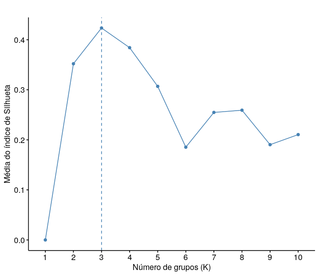Padronização
É necessário padronizar variáveis em unidades distintas. O médoto mais comumente utilizado para padronização de variáveis é conhecido por procedimento Zscore \[\displaystyle Z_{score}(X)={\frac {x_{i} - \bar x}{DesvioPadrão}}\]
N√£o Hier√°rquico
N√£o Hier√°rquico
o Metodo hierárquico é menos eficiente com grande volume de dados
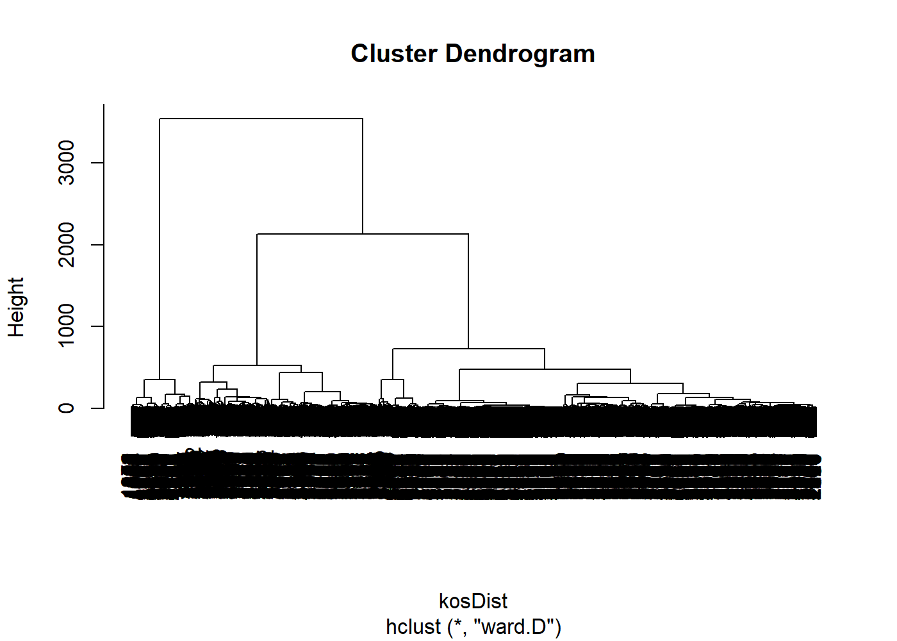k-means
O método K-means classifica os objetos dentro de múltiplos grupos, de forma que a variação intra-cluster seja minimizada pela soma dos quadrados das distâncias Euclidianas entre os itens e seus centroides.
\[\small W(C_k) = \sum_{x_i \in C_k}^{n} (x_i - \bar x_k)^2\]
K-means
O método k-means utiliza a distância Euclidiana como medida de dissimilaridade.
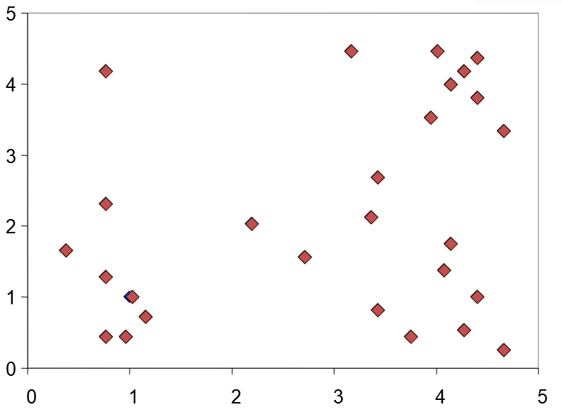K-means
É necessário avisar de antemão o valor de k.
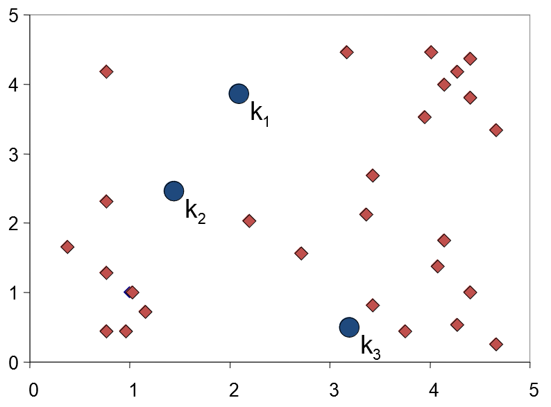K-means
O objetivo é minimizar a soma dos quadrados intra-cluster
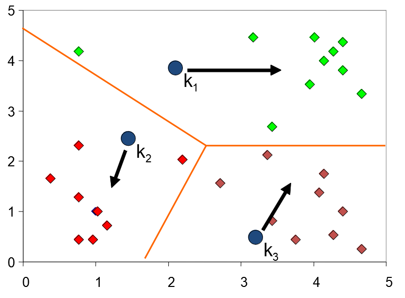K-means
O objetivo é minimizar a soma dos quadrados intra-cluster
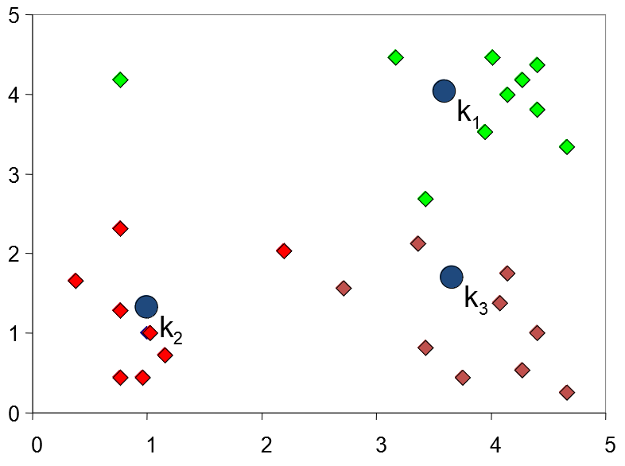K-means
A metodologia k-means segue 4 passos:
Seleciona randomicamente os centróides iniciais (sementes).
Calcula distância Euclidiana em relação aos seus centróides
Atualiza os centróides, esse processo é repetido até a convergência.
Uma leitura final dos dados assinala cada observação ao centróide mais próximo.